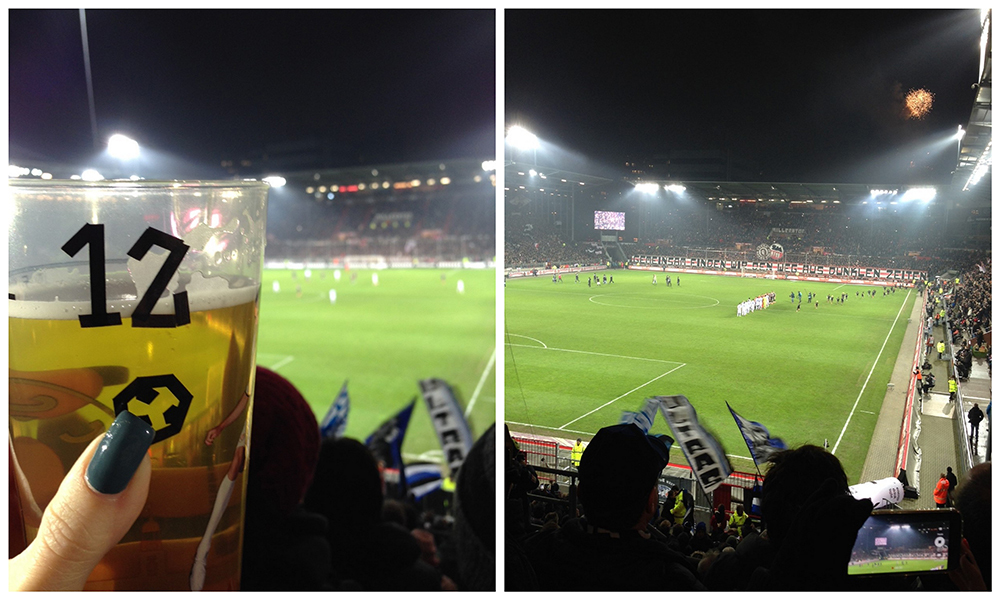
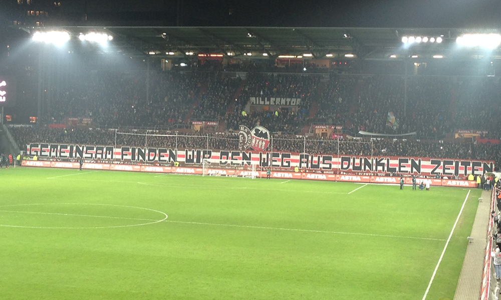

Der FSV Frankfurt zu Gast bei St. Pauli
Nach dem nicht so richtig guten Heimspiel gegen Greuther Fürth stand wieder ein Auswärtsspiel auf dem Programm. Machen wir uns nichts vor, wenn es heißt auswärts, dann haben wir einfach schon vorher ein besseres Gefühl. Und so töne ich schon Tage davor, dass wir gewinnen werden und dass unsere Jungs „sie in Stücke reißen werden“. Gewagte Aussage, wenn man bedenkt, dass der FSV noch nie in Pauli gewinnen konnte. Lediglich zwei Unentschieden hatte es gegeben. Aber naja, manchmal hat man eben dieses Gefühl! 1-3 für uns tippe ich bei Kicktipp.
So geht’s früh um 9 mit dem Fanbus Richtung Hamburg. Dummerweise kommen wir zu gut durch und sind verdammt früh vor Ort. 1,5 Stunden vor Stadionöffnung. Also erst einmal gegenüber ins Libero, das nach einer Stunde voll mit Bornheimern ist. Ein schöner Start in den Stadion-Abend. Wir treffen uns mit alten Freunden und lernen neue kennen. Ach , St. Pauli ist einfach sehr schön und entspannt. Wäre doch nur jedes Auswärtsspiel so angenehm. Gegen 18 Uhr ziehen wir dann rüber. Bekannt war ja, dass wir nicht die gesamte Nordseite haben, sondern nur je einen Steh- und Sitzblock. Dass es sich aber komplett vermischt und alles offen ist, finde ich alles andere als angenehm! Auch im Block: Vor uns, hinter uns, überall Heimfans. Toller Gästeblock (hier Augenrollen einfügen).

Die Aufstellung hatte bereits eine Stunde zuvor für mächtig Verwirrung gesorgt. Sogar per SMS wurde ich gefragt, was das sei, wo Spieler xy wäre und was da schon wieder los sei. Puh.. Ich zähle vier bzw. fünf Veränderungen im Vergleich zur Vorwoche. Huber und Barry sind dabei, Konrad fehlt ganz, Gugganig auf der Bank. Florian Ballas ist Kapitän. Vorne läuft wieder Dani Schahin auf, aber diesmal mit Awoniyi, der endlich seinen ersten Bundesliga-Einsatz bekommt. Und auch Yann Rolim ist von Beginn an dabei. Nun gut, harren wir der Dinge, die da kommen mögen.
Es dauert zehn Minuten bis es zum ersten Mal klingelt. 1-0 für den Gastgeber. Toll, es wird also doch nichts. Wir werden verlieren. Die negativen Gedanken haben wir nicht einmal zu Ende gedacht, da klingelt es erneut – aber auf der anderen Seite! Direkter Gegenangriff, Rolim auf Schahin, zurück auf Rolim, Schuss und Tor. Das Ding kullert rein. Es geht spannend weiter, wir sehen Chancen auf beiden Seiten, aber es bleibt erstmal beim 1-1. In Minute 32 wird es wieder spannend: Perdedaj versucht es aus der Distanz, trifft aber nur die Latte. Der Abpraller landet vor Schahin, der direkt einnetzt. Spiel gedreht. Ich habe schon gar keine Stimme mehr vor lauter Schreien. Nach der Pause geht es so weiter. Geile Chancen auf beiden Seiten, unser André Weis hält was das Zeug hält. Dann Minute 53: Eckball für den FSV durch Kalmár, Getümmel im Strafraum und wieder ist der Ball im Netz. Schahin, Ballas? Nein, scheinbar Eigentor von Lasse Sobiech, der den Ball mit dem Oberarm ins Tor lenkt. Unfassbar, wer hätte das gedacht. Pauli hätte auf Rang zwei hüpfen können und geht so unter. Doch auch der Schiedsrichter hat hier ein wenig nachgeholfen, gegen Ende wurden zwei Elfmeter für Pauli nicht gegeben. Beide Situationen hatte der Unparteiische scheinbar nicht gesehen. Glück für den FSV, der sich den Sieg trotz allem wirklich verdient hat! Kurz vor Schluss kommt dann auch Joel Gerezgiher zu einem ersten Kurzeinsatz. Leider zu kurz, aber einige Partien wird es ja noch geben.

Das Team wird gefeiert, wir liegen uns in den Armen. Es ist kaum zu glauben, wie schön es ist, nach 2,5 Monaten endlich mal wieder zu gewinnen! Natürlich wieder auswärts. Und es geht auch auf fremdem Boden weiter, kommenden Sonntag wird uns Eintracht Braunschweig empfangen! Und wartet ab, da wird der FSV wieder etwas mitnehmen!
Ersten Kommentar schreiben